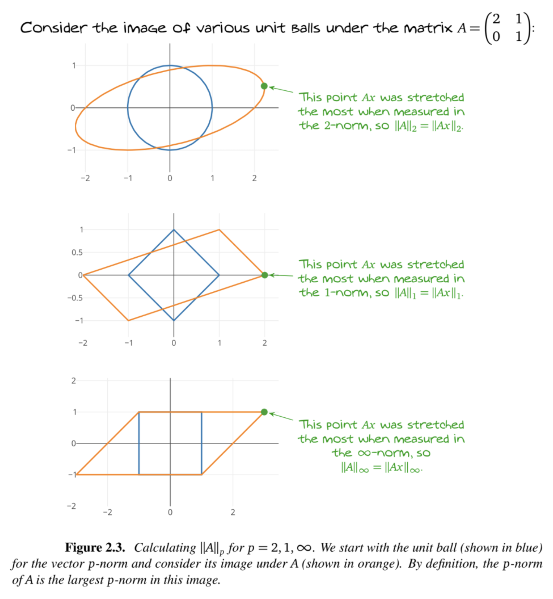

Measuring the size of a matrix
This is the main norm we will use. It can be derived from the Vector norms and extended to matrices
Example:
2-norm / 1-norm / -norm: 
Other norms that are useful.
Frobenius norm: it is very convenient to analyze matrices that can be decomposed into blocks
Useful inequalities for proofs
This is a consequence of the definition of the norm. Exercise: prove this result using the definition.
For Frobenius and -norms:
This is called a sub-multiplicative norm.
Vectors and matrices, Vector norms, Matrix-vector and matrix-matrix product